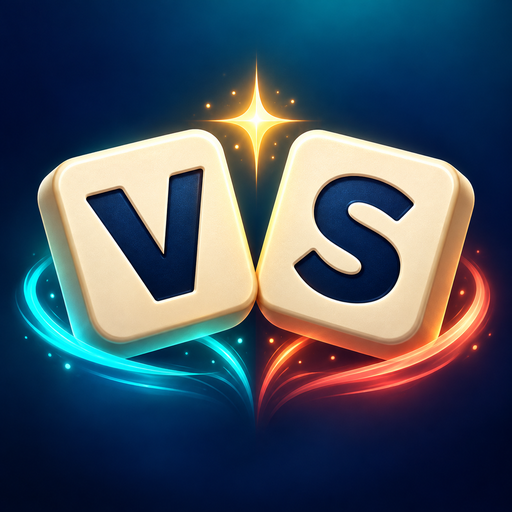

Versa Squabble DuoSupport
A little help for your next friendly rivalry.
Common questions
This guide covers the upcoming iOS app.
How do I start a game?
Choose same-device play, computer play, or an online game. Enter your player name and choose a claim timer. For computer play, choose Beginner, Intermediate, or Advanced.
Can I play without internet?
Yes. Same-device play and computer games work offline. Games across two devices and voice chat require internet access. Bluetooth play is not supported.
How do claims and steals work?
Make a word of four or more letters from the shared pool. You can also use all the letters of an existing word to build a different word, adding other available letters as needed. Buzz first, then claim before the countdown ends. Words already used in the round cannot be reused, even after being stolen or transformed. An unsuccessful claim can cost you one of your own words.
How are scores and winners decided?
Words with four to six letters score one point; words with seven or more letters score two. The highest score wins. Total letters break a tied score; if those also tie, the game is a draw. Quitting a game still tallies the current scores and records the result.
Can I change the timer?
Yes. Set the claim timer before starting a game. The default is 20 seconds, with 10, 15, 20, 30, 45, and 60-second choices.
How does my friend join an online game?
Create an online game and share its invitation link privately with your friend. Your friend opens the app, chooses Have an invitation, and pastes the new link. Both devices must be connected to the internet. If an old or ended game appears, copy the invitation from your current game again.
How do I use voice chat?
During an online game, both players join voice and allow microphone access when asked. Check mute, volume, and any connected headphones. If microphone access was denied, enable it for the app in device Settings. Headphones help prevent echo when devices are nearby. Some networks can block the direct voice connection; try another network. Voice is optional and is not recorded by the app.
Where is my match history stored?
Completed results include player names, scores, and the date and time. History and head-to-head records are saved locally on each device. They do not automatically sync across your devices. Deleting the app can erase that history.
How much will the app cost?
The planned US App Store price is $4.99 as a one-time app purchase, with no subscription or in-app purchases planned. The app is preparing for release. Local pricing and taxes may vary; check the App Store for the final price.